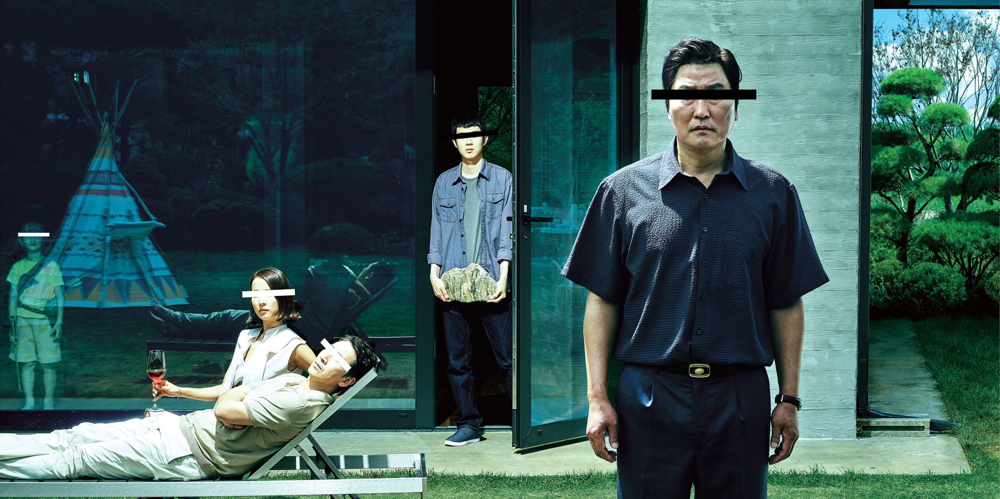
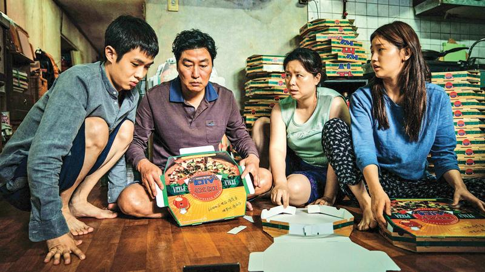

| Home | About | Honesty |
|---|
| Home | About | Honesty |
|---|
WARNING: Content may contain some spoilers!
In Ginocchio Da Te by Gianni Morandi. Released in 1964.
"Parasite" directed by Bong Joon Ho has attained four Oscar Awards and many more since its release back in 2019. The combination of dark comedy, suspense, and social commentary, this award winning film offers a penetrating examination of class difference and the human experience. Throughout this summary, you will learn about the movie, emphasizing its central themes, plot and remarkable cinematic achievements
(Oscars , 2020)
"Parasite" unfolds in Seoul, South Korea, it follows two families from different economic backgrounds. The Kim family, which consists of father Ki-taek, mother Chung-sook, son Ki-woo, and daughter Ki-jung, faced with financial hardships in a small semi-basement apartment. Throughout the start of the movie they employ devious tactics to enter the lives of a wealthy family, Park family. Securing various roles within the household with the Park family having a single clue.
As the two families lives cross path, tension builds up, and the glimpse of civility begins to fall apart. Parasite examines the contrast between the privileged and oppressed, revealing the harsh realities of economic inequality and how far people would go in order to be financially secured in life.
(McNamara , 2022)
"Parasite" explores several themes throughout the movie, from class division to social hierarchies. The film talks about the disparities between the rich and poor, examining the repercussions of these economic differences. Bong Joon Ho intelligently dissects the illusion of a harmonious society, disclosing the underlying tensions that stem from such inequalities
The director also emphasize the recurring theme of deception and the masks people wear to maintain their social status. The Kim's family relentless pursuit to adapt into false personalities and manipulate the other family. This exploration of humanity's capacity for impersonation and its consequences serves as a critique of a society that is fixated on social standing.
(Nayanathara , 2021)
"Parasite" goes through engaging narrative that seamlessly plays with suspense and dark humor. As the Kim family infiltrates Park household, unforeseen events starts happening, leaving the audience on the edge of their seats. The film's narrative takes unexpected turns, challenging the viewers expectations and offering a fresh take on the thriller genre.
One of the most memorable plot twists occurs half way of the film, dismantling viewer's expectations and significantly altering the stories pace. Bong Joon Ho manipulates the audience's emotions, taking them on unpredictable rollercoaster of emotions and suspense.
(Webb , 2020)
The cinematography in "Parasite" is filled with attention to detail. The contrasting settings of the Kim family's dirty basement apartment and the park mansion the Park family had, symbolizes the class division. Vertical camera angles and skillful framing helps with contrasts, making it easy for the audience to distinguish the different between these two worlds.
Symbolism plays a big role in the film, with the recurring motif of stairs serving as metaphor for social mobility. The constant movement up and down the stairs signifies the character's pursuit of a better life, their dream future, and the obstacle they face. Bong Joon Ho's intricate use of symbolisms builds the narrative, encouraging viewers to think about the broader implications of the story.
(Desowitz , 2019)
"Parasite" stands as a cinematic marvel that elevates cultural and language barriers, resonating with audiences across the globe. It's likeable social commentary, engaging plot, and exceptional performances ensure it leaves an exceptional impression. Bong Joon Ho in blending dark humor with profound themes of inequality and duplicity showcases that he is a master in his craft. Whether you are a connoisseur of international movies or new to Korean films, "Parasite" is a must-see masterpiece that challenges societal norms and provokes self-analysis.
(Cea , 2019)